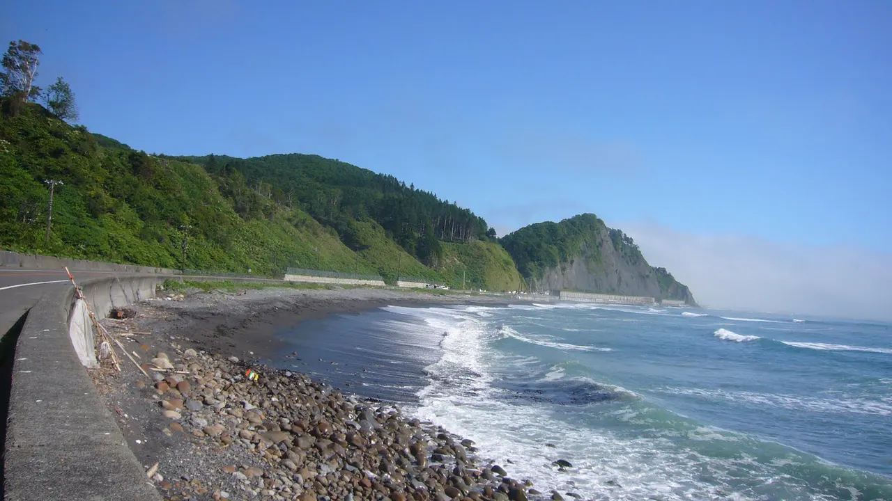
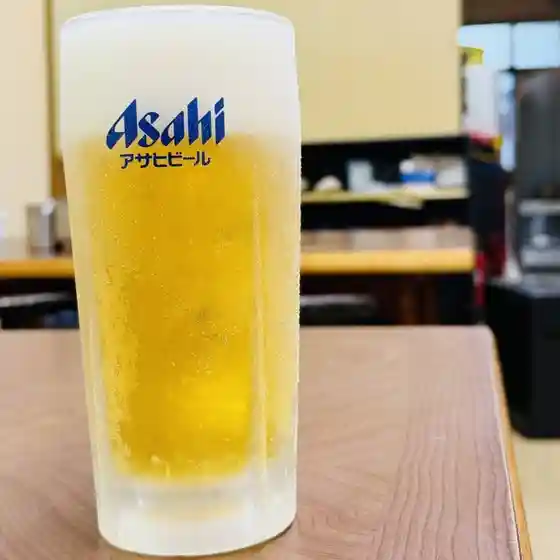
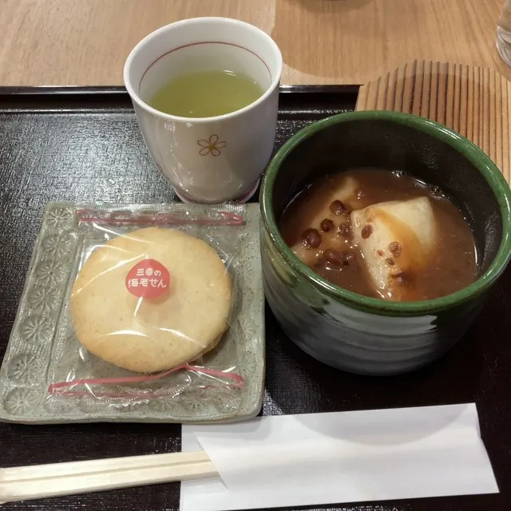
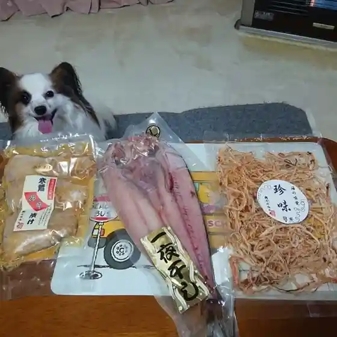
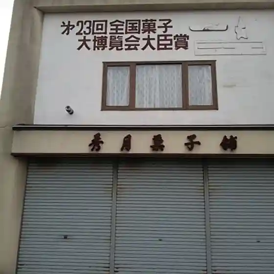
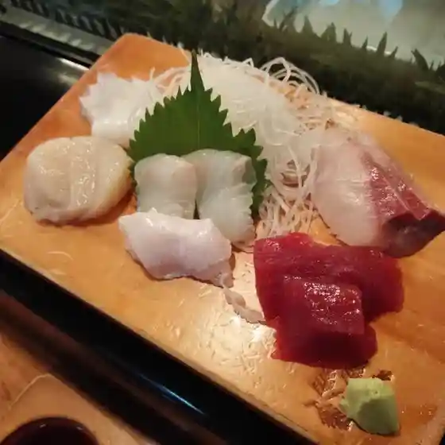
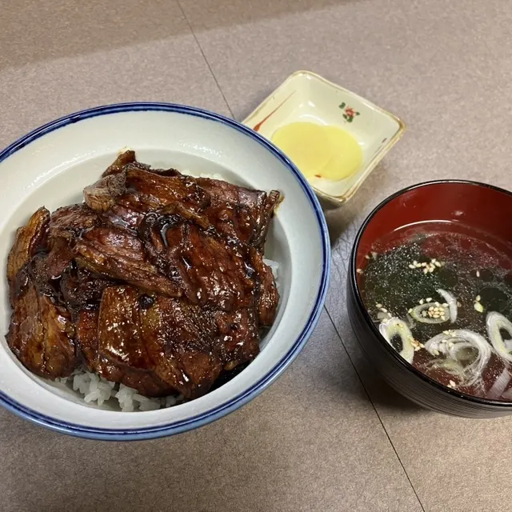
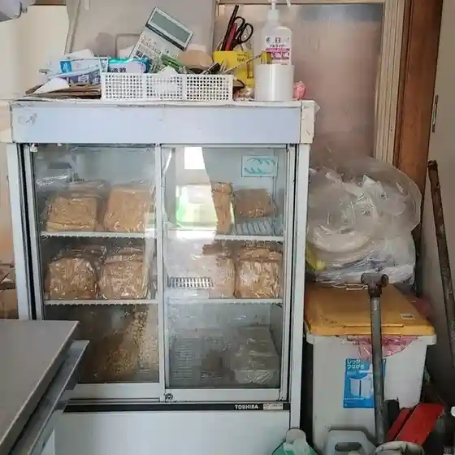

Hiroo
Hiroo · Hokkaido
Hiroo
Highlighted on the Hokkaido map.

Stay
めぐみ屋 旅館
Megumi Ya Ryokan
Dining
焼肉東香園

Yakiniku Touka Sono
グッディーズ ダイナー

Guddeiizu Dainaa
岡嶋水産

Okajima Suisan
秀月菓子舗

Shuu Gatsu Kashi Ho
みよい寿し

Miyoi Hisashi Shi
食堂 かすり

Shokudou Kasuri
勝見豆腐店

Katsumi Toufu Mise
パティスリー ウエダ
Pateisurii Ueda
かいせん
Kaisen
たかはし旅館
Takahashi Ryokan
援
En
丸福亭
Marufuku Tei
菊地ファームカフェ
Kikuchi Faamukafe
鈴や
Suzu Ya
光香堂
Hikari Kaori Dou
桃源楼
Tougen Rou
和比呂
Wa Hiro
ゆうゆうベーカリー
Yuuyuu Beekarii
清信旅館
Kiyonobu Ryokan
山岸ソフトクリーム
Yamagishi Sofutokuriimu
ぼっちゃん
Botchan
みなと館
Minato Kan
A・COOP サンタ村
A Coop Santa Mura
ラーメン飯店 大将
Raamen Hanten Taishou